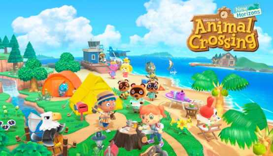
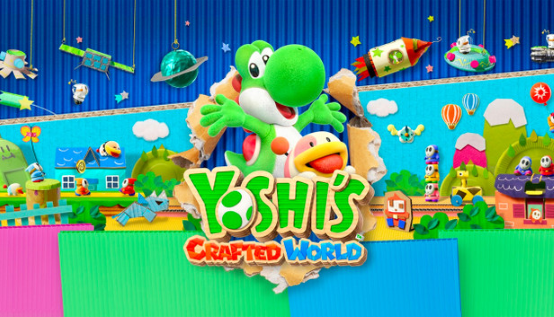

Infantil

Bluey: El Videojuego

¡Pásalo genial con Bluey y su familia en Bluey: el videojuego! Juega a una historia completamente nueva a lo largo de cuatro aventuras interactivas. Podrás explorar por primera vez lugares icónicos como la casa de los Heeler, los parques, el arroyo y, además, ¡una playa! Juega a tus juegos favoritos de la serie, como ¡Que no toque el suelo!, ¡A la caza de Charlatán! y muchos más.
¡Pero la diversión no acaba aquí! El juego no será trifícil, sino muy divertido. ¡Descubre la alegría y las maravillas del mundo de Bluey, que incluye un modo multijugador local para que juegues con tu familia y tus amigos en el modo historia y en el modo libre!
Explora y colecciona objetos para tu álbum de pegatinas, desbloquea atuendos y descubre los secretos y las referencias ocultas de cada lugar. Recrea escenas icónicas o crea tus propias aventuras y tus propios juegos inspirados en Bluey.
Hasta 40€
Animal Crossing: New Horizons
Animal Crossing: New Horizons para Nintendo Switch es un juego de simulación que es principalmente para un jugador con algunos elementos multijugador y es la quinta entrega del juego que presenta la cara familiar y querida de Tom Nook, esta vez en una isla desierta. Al igual que con los otros juegos de Animal Crossing, construirás tu hogar, conocerás y ayudarás a tus vecinos y amigos animales y juntos construiréis una comunidad.
Hasta 60€
Yoshi's Crafted World
Vive con Yoshi una nueva aventura en Nintendo Switch que pondrá patas arriba todas tus expectativas sobre juegos de desplazamiento lateral.
Explora un mundo con aspecto de diorama hecho de cajas de cartón y vasos de papel, en el que cada nivel tiene su lado frontal normal y también un lado posterior que ofrece una perspectiva diferente y otras sorpresas.
El paisaje está poblado de muchos obstáculos inusuales y un huevo bien disparado puede desvelar nuevos caminos. Explora cada rincón de los niveles en busca de objetos mientras Yoshi se dirige hacia la meta. ¡Además puedes unirte a un amigo en partidas cooperativas de dos jugadores solo con pasarle el mando Joy-Con!